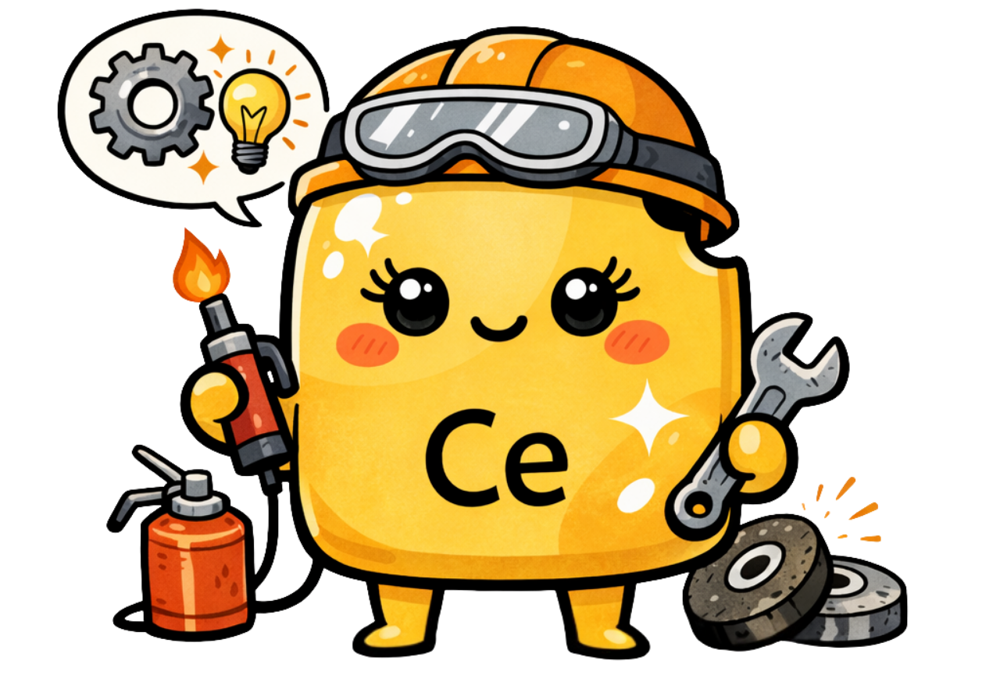
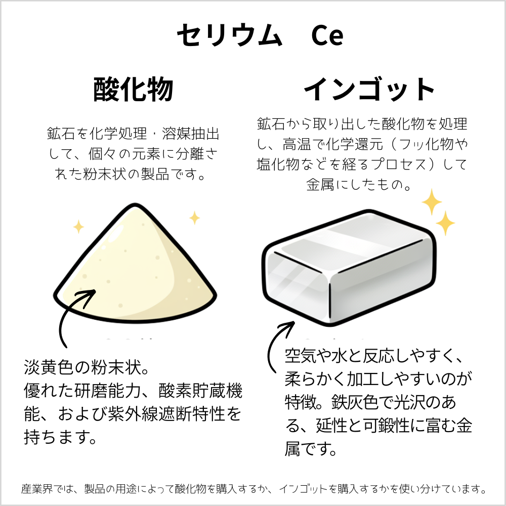
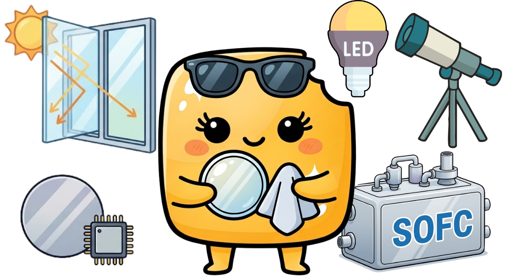

セリウム
Cerium

セリウムは、元素で、『レアアース（希土類元素）』と呼ばれる17種類の一つです。
🔮 擬人化キャラの性格
明るく世話好きで、誰にでも気さくに手を差し伸べる現場の実務家。改善のプロ。サービス精神旺盛で自分の力を惜しみなく周囲に分け与えますが、摩擦や強い刺激を受けると情熱の火花を散らす一面も。親しみやすさとタフさを兼ね備え、みんなの暮らしを一番近くで支え続ける、エネルギーあふれる頼もしい味方です。

🧪 リアルな元素の特徴
レアアースの中で地殻中に最も多く存在する「レアアースの王道」。需要については2025年には元素シェアの38.16%[※出典: Mordor Intelligence]を占めています。酸素を吸収・放出する優れた化学的性質を持ち、自動車の排ガス浄化触媒として地球環境を守っています。また、ガラスの表面をピカピカに磨き上げる研磨剤や、ライターの石（発火合金）の主成分としても身近で活躍する、非常に実用的な元素です。
| 名称 | セリウム | 記号 | Ce |
|---|---|---|---|
| 番号 | 58 | 原子量 | 140.12 |
| 密度 | 6.77 g/cm3 | 原子半径 | 185 pm |
| 分類 | 希土類元素（ランタノイド） | ||
💎 セリウム、実際はどんなもの？

セリウムは、銀白色の延性に富んだ非常に柔らかい金属です。レアアースの中では最も存在量が多く、空気中で急速に酸化して表面がくすみます。ナイフで削れるほどの柔らかさがあり、擦ったり衝撃を与えたりすると火花を散らして発火しやすい性質を持っています。酸に溶けやすく、水とも徐々に反応します。

セリウムは、酸素を保持・放出する反応性と、表面を滑らかに研磨する優れた性質を持っています。自動車の排ガス浄化用触媒（三元触媒）として有害物質を低減するほか、液晶画面や半導体ウエハの超精密研磨剤、ライターの石（フェロセリウム）、紫外線吸収ガラスの添加剤など、環境技術から産業用品まで幅広く利用されています。